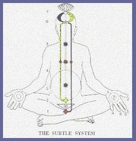
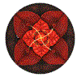
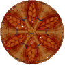

| CHAKRA |
|
 |
|
Welcome to my Page on Chakras. WHAT ARE CHAKRAS? These are
different energy fields connected to the body, much like
various
frequencies through which human life can be expressed. The word
Chakras is from the Hindu word for wheel. The chakras are thought to
be spinning wheels, creating a vortex of energy. The energy spins
more slowly at the base of the spine, becoming brighter and faster
as it reaches the top of the spine. Breath, consciousness and
awareness are the tools that are required to keep the energy
spinning. The chakras create the energy field that is known as the luminous body of aura, which surrounds all forms of life. The chakras are the batteries for the body, they receive and store energy by interacting with the universal life force. They then direct the energy to supply the needs of the body. Any blocks or restrictions that you might have in either reception or expression of this life energy will result in the malfunction of the organism as a whole, and will be experienced as a disease, discomfort, lack of energy or an ailment. By acquainting yourself with your chakras, how they work, and how they should operate when totally healthy, you can diagnose your own blocks and restrictions. Everyone has chakras and all of them are functioning. The degree of efficiency is the factor that varies between individuals and between different stages of your life. The chakras can more simply be viewed as seven pathways to consciousness, which work together to create a sense of joy and holistic love for life. |
|
|
|
|
 |
|
|
|
Sahasrara Crown Violet Understanding |
Ajna Brow Indigo Intuition |
Vissuddha Throat Blue Communication |
Anhata Heart Green Peace/Love |
Manipura Solar Plexus Yellow Power |
Swadisthana Spleen Orange Sexuality |
|
The
Seventh Chakra is the Muladhara -Root or Base Chakra |
|||||
|
....The
pictures above show the chakra centres in the body.... Doorways for the Emotional, Mental, & Spiritual Energy to flow into the Physical Body.....Meditating on these seven Chakra centres can be used for self healing |
|
The purpose
of Chakra Meditation is to assist you into opening the seven sacred
Chakra of consciousness that are located within your body...your
mind...and your spirit.As you open these seven sacred centres...all
areas of your life will move into divine harmony and balance and you will begin to flow with the cosmic energy that is all around you.. |
|
NOW WE SHALL BEGIN... |
|
Sit
with your back in straight physical alignment with your weight
balanced centrally so that your chakra centres are well aligned.... your feet firmly on the floor .. and your hands resting on your thighs palms up... Close your eyes... |
|
Take a
LONG......SLOW......DEEP...... breathe in through your nose and
HOLD. |
|
 |
||
|
Now the
focus of the light moves up...and a bubble is formed around the
Spleen Chakra and the light moves to harmonize and balance the
energies there....and the colour is ORANGE..and the sound is RA
(ray)...The energies are vibrating ...and the energies are
..harmonising and the sacred lotus blossom is opening and spreading
upward and releasing the energies of LIFE.....
...VITALITY..GROWTH..YOUTH..CREATIVITY....All of these qualities are
being released and harmonised by the words now spoken by YOU...I now
open the 2nd Sacred Chakra of my consciousness....I am in tune with
the universal life flow....I dedicate my life my love ..and my
light..to the benefit of the whole world...I am a child of the
Universe ...and I am ONE with the Universal life flow...And the
energy is harmonised and the energy is balanced..!!!!
You have now opened the 2nd Chakra..The Spleen Chakra.... |
||
|
 |
||
| Now the focus of the light moves..and the bubble of energy of light is formed around the Solar Plexus Chakra...And the light moves to harmonise and balance that Chakra ...and the colour is YELLOW ...and the sound is ME....The energies are vibrating ...and the energies are harmonising ...and the sacred lotus blossom is opening and spreading upward and releasing the energies of FAITH...JOY...HOPE...ALL of these qualities are being released and harmonised by the words now spoken by YOU...I now open the 3rd Sacred Chakra of my consciousness...I am in tune with the Universal life flow ..I am filled with joy..faith ..and hope ...my cup runneth over....I am a child of the Universe...and I am ONE with the Universal life flow....and the energy is harmonised ...and the energy is balanced..!!!! You have now opened the 3rd Chakra..The Solar Plexus Chakra... | ||
|
Now the
focus of the light moves up... and a bubble is formed around the
Heart Chakra...and the light moves to harmonise and balance the
energies there ...and the colour is GREEN...and the sound is FA...The energies are vibrating... and the energies are harmonising... and the sacred lotus blossom is opening and spreading upward and releasing the energies of LOVE...LOYALTY...SINCERITY...FORGIVENESS...CHARITY...ALL or these qualities are being released and harmonised by the words now spoken by YOU...I now open the 4th Sacred Chakra of my consciousness...I now direct the Universal life flow into my heart...I am perceiving life and love into my heart centre..I breathe this life force and I radiate it to everyone I meet....I am in tune with the universal life flow...I am peaceful...I am a child of the Universe...I am ONE with the Universal life flow...and the energy is harmonised and the energy is balanced...!!! You have now opened the 4th Chakra...The Heart Chakra.... |
||
| Now the focus of light moves up ...and a bubble is formed around the Throat Chakra...and the light moves to harmonise and balance the energies there... and the colour is BLUE... and the sound is SO....The energies are vibrating ...and the energies are harmonising... and the sacred lotus blossom is opening and spreading upward and releasing the energies of POWER...DIGNITY.... ...PRIDE...HONESTY .... ALL of these qualities are being released and harmonised by the words now spoken by YOU...I now open the 5th Sacred Chakra of my consciousness...which is the gateway to mental and physical power...I project this power to my brain...releasing the golden light of wisdom ...I use my words well and seek ONLY to harmonise thoughts...I breathe this life force and I radiate it to everyone I meet...I am a child of the Universe... ..and I am ONE with the Universal life flow...and the energy is harmonised and the energy is balanced...!!! You have now opened the 5th Chakra..The Throat Chakra... | ||
| And the focus of the light moves up ...and a bubble is formed around the Brow Chakra...and the light moves to harmonise and balance the energies there... and the colour is INDIGO...and the sound is LA..The energies are vibrating ...and the energies are harmonising ...and the sacred lotus blossom is opening and spreading upward and releasing the energies of.BEAUTY...FRIENDLINESS ...GENEROSITY...HAPPINESS...RADIANCE...As the light vibrates ..my Third Eye is opening..The eye of my psychic and spiritual vision ...and the divine perfect light fills my being...I am now able to see with the inner radiance of my inner eye...!!!...My Spiritual Eye...!!!... and I am becoming aware of my true spiritual nature ..and the true spiritual nature of all reality...I meditate. . I focus on beauty..Life becomes beautiful...I am a child of the Universe ..and I am ONE with the Universal life flow...and the energy is harmonised and the energy is balanced...!!! You have now opened the 6th Chakra...The Brow Chakra.... | ||
|
And
the bubble of light is moving ...and a bubble is forming around the
Crown Chakra...and the colour is VIOLET...and the sound is TE... The energies are vibrating...and the energies are harmonising..and the sacred lotus blossom is opening and spreading upward and releasing the energies of ASPIRATION.... ..INSPIRATION...COSMIC AWARENESS...SOUL EVOLUTION...and all of these qualities are being released ...and harmonised by the words now spoken by YOU...I now open the 7th Sacred Chakra ...activating the power of my mind ..and my spirit...as I breathe deeply..I am receiving...I am receiving....... The light is illuminating my mind ...and my imagination ..and my memory...and my psychic centres..I am in tune with the Universal life flow .. I am a child of the Universe ...and I am ONE with the Universal life flow ...and the energy is harmonised... and the energy is balanced..!!! ....You have now opened the 7th Sacred Chakra ...The Crown Chakra... |
||
|
Now
all of my energies are in harmony and in balance.... I am in a
higher vibration...a healthy state of mind...at ONE with peace
...and love ...and joy ...and happiness.... And the light is moving
from the Root Chakra...and all the Chakras are turned upwards ...and
receiving ...and the energy is moving out of the top of my
head...and then falling back down gently around my aura...I am
open..and loving...and
supportive...I now find it possible to maintain this incredible high
rate of vibration as I go through my daily activity...and
soon I will be able to maintain this high state of vibration for
days and days......... YOU HAVE NOW OPENED.... AND HARMONISED .....AND BALANCED.....YOUR SEVEN SACRED CHAKRA CENTRES....... |
|
AFFIRMATIONS FOR ENERGY BALANCING
|
|
Root Chakra I trust my Higher Self fulfils all my needs. My life is full of prosperity Spleen Chakra I accept and acknowledge my sexuality. My physical health is strong and pure. Solar Plexus In a smooth and healthy way, I release all unresolved emotions. I claim my personal power. Heart Chakra I freely and easily give and receive love, totally forgive myself and others for all past errors and judgements. Throat Chakra I easily and gracefully express my deepest feeling and emotions. Third Eye Chakra My inner vision is clear and strong. I trust my intuition and inner vision. Crown Chakra I accept and acknowledge my spirituality |